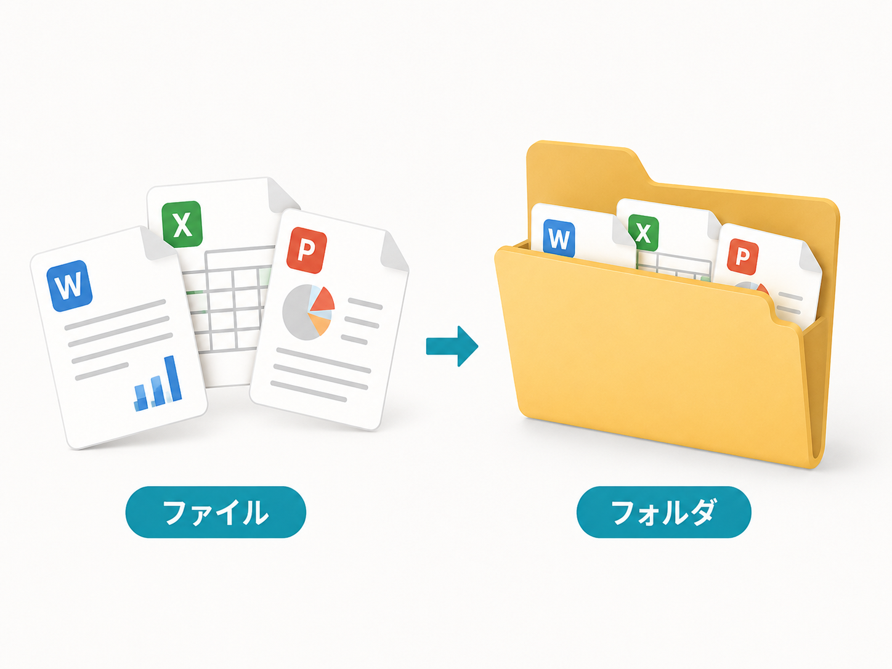
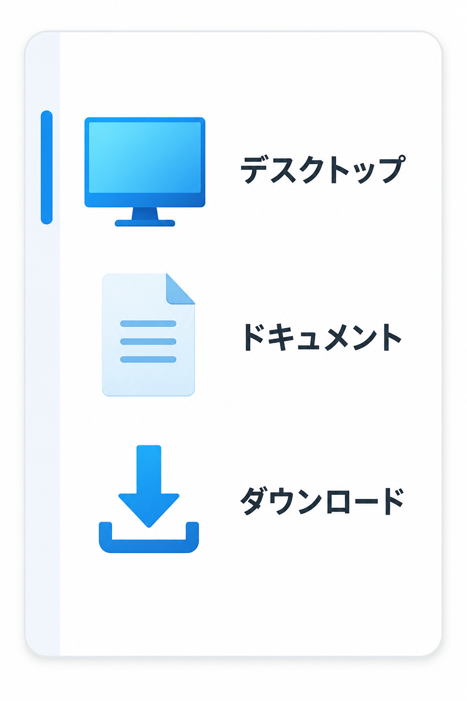
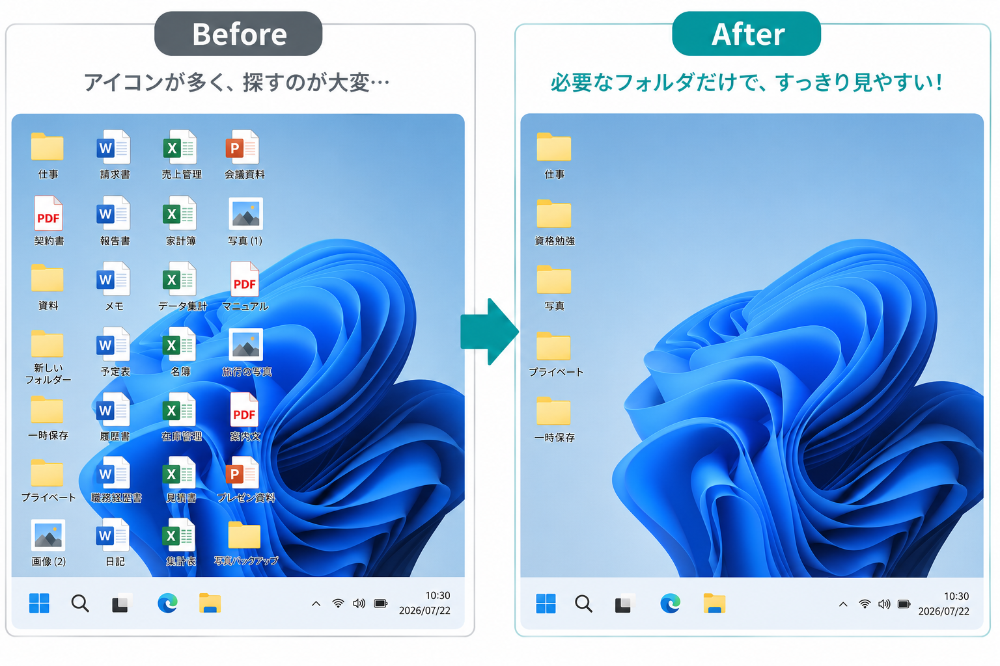
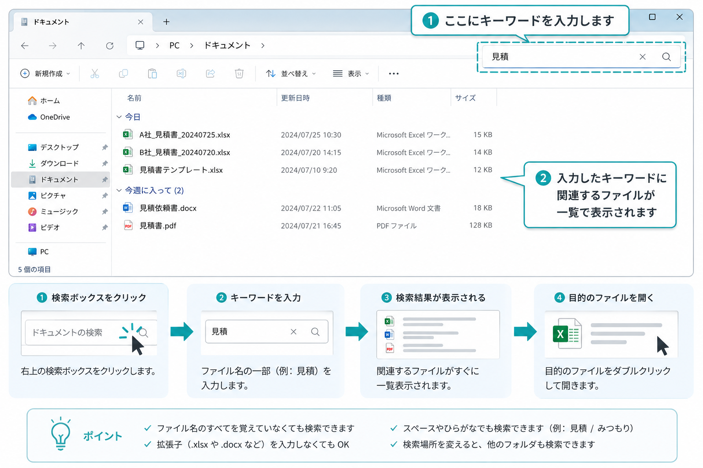

ファイルとフォルダの管理術
「作った書類をなくさない」ための整理の基本
「保存したはずのファイルが、どうしても見つからない」
「デスクトップがアイコンだらけで、壁紙が全く見えない」
「同じような名前のファイルが何個もあり、どれが最新か分からない」
パソコンを使い始めたばかりの頃、誰もが一度はこうした経験をします。実は、実務においてタイピングやソフトの使い方と同じくらい大切なのが、この「ファイルとフォルダの管理」です。
仕事の現場では、書類を「作ること」と同じくらい、「必要な時にすぐに見つけ出せること」が重要視されます。仕事のスピードは、この整理の基本ができているかどうかで決まると言っても過言ではありません。
ファイルとフォルダの違い
整理を始める前に、まずは基本となる2つの言葉の違いを理解しましょう。パソコンの中の世界を、現実の「事務作業」に例えると非常に分かりやすくなります。
「ファイル」は、一枚一枚の「書類」
ファイルとは、パソコンで作ったデータそのもののことです。Wordで作った文章、Excelで作った家計簿、スマホから取り込んだ写真など、これらはすべて「ファイル」と呼ばれます。現実の世界で言えば、一枚の紙に書かれた「報告書」そのものだと考えてください。
「フォルダ」は、書類を入れる「箱」
一方、フォルダは、複数のファイルをまとめて入れておくための「入れ物」です。書類（ファイル）がバラバラに散らばらないように分けるための「バインダー」や「引き出し」のような役割を果たします。フォルダの中に、さらに別のフォルダ（子フォルダ）を作ることもできます。

▲ ファイル＝中身の書類、フォルダ＝整理用の箱、と覚えましょう
パソコンが苦手な方は、何でも一つの場所に置いてしまいがちです。まずは「書類そのもの（ファイル）」と「それを分ける箱（フォルダ）」という区別を意識するだけで、パソコンの中身は劇的にスッキリし始めますよ。
保存場所を意識しよう
「保存したはずなのに見つからない」最大の原因は、保存ボタンを押す時に「どこに」入れているかを意識していないことです。Windowsには、定番の保存場所がいくつかあります。
-
デスクトップ：一時的な「机の上」
起動して最初に表示される画面です。すぐに手が届くので便利ですが、ここに何でも置くのは机の上に書類を山積みにするのと同じです。ここは「今日使う分だけ」を置く、一時的な場所にしましょう。
-
ドキュメント：書類の「本棚」
Windowsが「書類はここに入れてね」と用意してくれているメインの保存場所です。WordやExcelで作った仕事の資料は、基本的にこの中にフォルダを作って保存するのが正解です。
-
ダウンロード：インターネットからの「玄関口」
ネットから入手した資料や、メールの添付ファイルなどは自動的にここに入ります。中身を確認したら、すぐにドキュメントなどへ移動させる癖をつけましょう。

▲ 左側のメニューから、目的の場所を素早く選ぶ習慣をつけましょう
インターネット上に保存するサービスです。パソコンが故障した場合でもデータを復元しやすくなります。Windows11では最初から利用できるため、仕事でもよく使われています。
フォルダを作る習慣をつけよう
整理されていないパソコンの中身は、まるで「すべての書類が床にぶちまけられた部屋」のようです。フォルダを使って、生活や仕事に合わせた「箱」を用意しましょう。
フォルダ名の頭に「01_」「02_」と数字をつけるのは、仕事の現場でよく使われる手法です。パソコンは名前順に並び替える性質があるため、数字をつけておけば、常に自分の決めた順番で表示させることができます。
自分に合わせたフォルダ構成の例
まずは大きな分類から作り、その中に少しずつ細かい箱（子フォルダ）を作っていきましょう。
- 【01_仕事】
- 【02_勉強】
- 【03_写真】
- 【04_家計簿】
- 【A社様】
- 【B社様】
- 【研修資料】
ファイル名の付け方
ファイルに名前を付ける時、ついつい「最新」「完成版」といった名前を付けていませんか？ 仕事では「開かなくても中身がわかる名前」が求められます。
| NGな付け方 | おすすめの付け方 |
|---|---|
| 新しい フォルダー |
【日付 ＋ 相手先 ＋ 内容】 例：20240725_A株式会社_見積書.xlsx |
| 完成版 最新2 |
【版数を数字で管理】 例：会議資料_v1.docx / 会議資料_v2.docx |
日付を「7月25日」と書くのではなく、西暦から8桁の数字で書くのがコツです。こうすると、パソコンが古い順・新しい順に完璧に並べ替えてくれます。
デスクトップを倉庫にしない
デスクトップはあくまで「作業する机の上」です。現実のデスクの上が去年の資料で埋まっていたら、新しい仕事はできませんね。
アイコンが増えすぎると目的のファイルを探しにくくなるだけでなく、環境によっては表示や同期に時間がかかることもあります。作業が終わったらドキュメント（引き出し）に片付ける。この習慣をつけるだけで、パソコン作業のストレスは劇的に減ります。

▲ デスクトップを毎日リセットするのが「仕事の効率化」への近道です
削除したファイルはまず「ゴミ箱」へ
パソコンを使い始めるときに知っておきたいのが、削除の仕組みです。「消したら二度と戻らない」と思って緊張してしまう方もいますが、Windowsには安全装置があります。
削除したファイルは通常、すぐには完全に消えず、一度「ゴミ箱」という特別なフォルダに移動します。間違えて消してしまった場合でも、ゴミ箱を開いて「元に戻す」操作をすれば、元の場所へ帰ります。
ゴミ箱を「空にする」という操作をすると、中のファイルは復元できなくなります。また、USBメモリ上のファイルを削除した場合は、ゴミ箱を通らずにそのまま消えてしまうことがあるため注意が必要です。
困ったときは検索機能も使える
どれだけ丁寧に整理していても、迷うことはあります。そんな時はエクスプローラー（フォルダを開いた画面）の右上にある「検索ボックス」を使いましょう。
ファイル名のすべてを覚えていなくても、名前の一部を入力するだけで、パソコン内から一瞬で探し出してくれます。ただし、これは予備手段と考え、基本の整理を優先しましょう。

▲ ファイル名の一部を入力するだけで、検索が開始されます
バックアップも忘れずに
パソコンは機械ですので、ある日突然壊れることがあります。大切な書類を失うことは、仕事では大きなトラブルに繋がります。大切なデータは「2箇所以上に保存する」バックアップの考え方を持ちましょう。
USBメモリは持ち運びに便利ですが、紛失や故障の可能性もあります。USBだけに保存するのではなく、パソコン本体やOneDriveなど複数の場所へ保存する習慣をつけましょう。
仕事では「整理整頓」そのものが評価される
事務職の現場で、「仕事が早い」と評価される人の共通点は、「探し物をしている時間が短いこと」です。
上司から「昨日の見積書ある？」と聞かれた時、10秒で出せる人は信頼されます。逆に3分間探し回る人は、どれだけタイピングが速くても「管理が甘い」と思われてしまいます。ファイル管理は、あなたのスキルを「本物」にするための鍵なのです。
ファイル整理のポイントまとめ
- 「ドキュメント」の中にフォルダを作る：生活や仕事に合わせた大きな「箱」を用意しましょう。
- 名前の先頭に「日付」を入れる：20240725_報告書 のように付けるだけで、並び順が完璧になります。
- 削除しても一度は「ゴミ箱」に入る：間違えて消してもゴミ箱から戻せます。空にする前には確認を。
- 大切なデータは2箇所以上に保存：USBメモリの紛失やパソコンの故障に備えましょう。